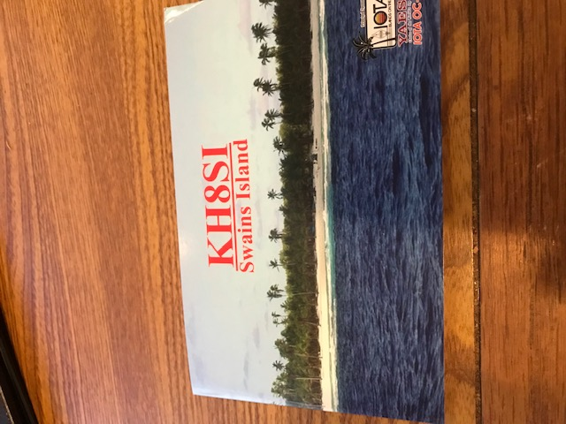
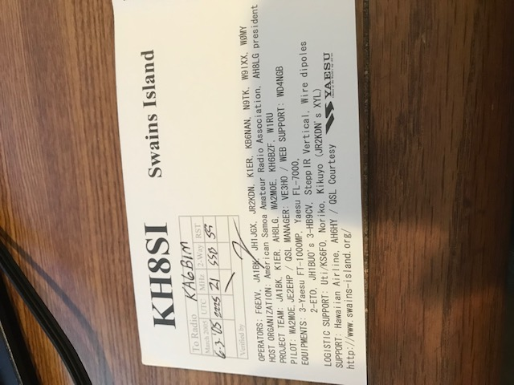
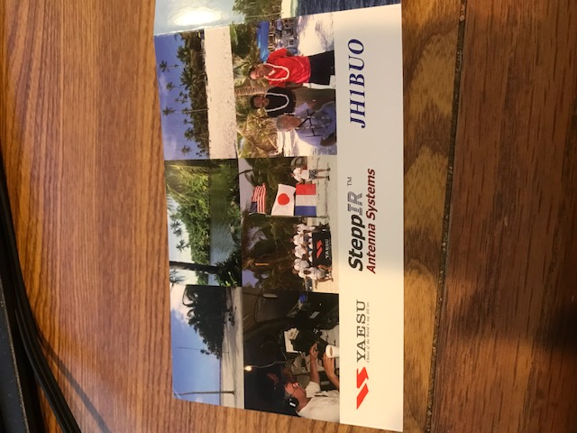

<!-- MHonArc v2.6.19+ -->
<!--X-Subject: Re: [NCDXC Chat] W8S Swains -->
<!--X-From-R13: xn6ovzNqvgqnusnez.pbz -->
<!--X-Date: Thu, 05 Oct 2023 22:39:22 &#45;0500 -->
<!--X-Message-Id: 90E52497&#45;3235&#45;4A77&#45;9396&#45;1A6342920A70@ditdahfarm.com -->
<!--X-Content-Type: multipart/alternative -->
<!--X-Reference: 015F045B&#45;C85C&#45;47B8&#45;BF1C&#45;758FA0CE8D11.ref@yahoo.com -->
<!--X-Reference: 015F045B&#45;C85C&#45;47B8&#45;BF1C&#45;758FA0CE8D11@yahoo.com -->
<!--X-Reference: 812134881.5158170.1696525674095@mail.yahoo.com -->
<!--X-Reference: 5036f986&#45;acff&#45;e79a&#45;a867&#45;015c83aeaa65@gmail.com -->
<!--X-Reference: CA+r3BPpV_KE1jLWXZywx_KUMX5x+EtEFY8m9Q4uevb5OZJ5z_w@mail.gmail.com -->
<!--X-Reference: CA+r3BPrc=nDPvCDBaEOxsb0R843&#45;vD0Q&#45;4Sx5VK0YzTLq0N7rA@mail.gmail.com -->
<!--X-Reference: 08B91FD3&#45;7BE2&#45;49D0&#45;94A0&#45;3832AD96D8C5@gmail.com -->
<!--X-Reference: 001101d9f7e4$a4839030$ed8ab090$@earthlink.net -->
<!--X-Reference: 1AADF9CA&#45;4F52&#45;41BC&#45;AF22&#45;5F438BB9FF0F@gmail.com -->
<!--X-Derived: jpg4QlZ0gFpa9.jpg -->
<!--X-Derived: jpgEH8IcY5l0y.jpg -->
<!--X-Derived: jpg8HvQzcecLs.jpg -->
<!--X-Head-End-->
<!DOCTYPE HTML PUBLIC "-//W3C//DTD HTML 4.01 Transitional//EN"
        "http://www.w3.org/TR/html4/loose.dtd">
<html>
<head>

    <meta name="robots" content="noindex, nofollow">
<title>Re: [NCDXC Chat] W8S Swains</title>
<link rev="made" href="mailto:ka6bim@ditdahfarm.com">
</head>
<body>
<!--X-Body-Begin-->
<!--X-User-Header-->
<!--X-User-Header-End-->
<!--X-TopPNI-->
<hr>
[<a href="msg31032.html">Date Prev</a>][<a href="msg31034.html">Date Next</a>][<a href="msg31020.html">Thread Prev</a>][<a href="msg31034.html">Thread Next</a>][<a href="maillist.html#31033">Date Index</a>][<a href="threads.html#31033">Thread Index</a>]
<!--X-TopPNI-End-->
<!--X-MsgBody-->
<!--X-Subject-Header-Begin-->
<h1>Re: [NCDXC Chat] W8S Swains</h1>
<hr>
<!--X-Subject-Header-End-->
<!--X-Head-of-Message-->
<ul>
<li><em>To</em>: John Miller &lt;<a href="mailto:webaron%40gmail.com">webaron@gmail.com</a>&gt;</li>
<li><em>Subject</em>: Re: [NCDXC Chat] W8S Swains</li>
<li><em>From</em>: <a href="mailto:ka6bim%40ditdahfarm.com">ka6bim@ditdahfarm.com</a></li>
<li><em>Date</em>: Thu, 5 Oct 2023 20:39:13 -0700</li>
<li><em>Cc</em>: Steve Jones &lt;<a href="mailto:n6sj%40earthlink.net">n6sj@earthlink.net</a>&gt;, Norm NCDXC &lt;<a href="mailto:chat%40ncdxc.org">chat@ncdxc.org</a>&gt;, <a href="mailto:mldxcc%40groups.io">mldxcc@groups.io</a></li>
<li><em>Dkim-signature</em>: v=1; a=rsa-sha256; c=relaxed/relaxed; d=ditdahfarm.com; s=sig1; t=1696563559; bh=O89gHfYxqo1qrczU41mU7UDFwumHOsUivXro1hC/wv4=; h=Content-Type:Mime-Version:Subject:From:Date:Message-Id:To; b=D/4BhOCG2Bz7XBMQwF6U381OBnOQGsr5FVl6hHT0DOTaRTBAg6p8Kj/k12K1gioEe 62Xk81+RGjU9uld9DBuC1Tol0UdPdAyOf1mp9LY2GX9egKFHFdh5dqIefBG3tt+8Kv gbGqo0z7ibXp+BK1385cl65/rXTvmVH6hR++NwexuoffdW1X5OijMFWdgkBJTbIq63 35YVvts7xDY6eDQEra6NXtkDdrXRBhUaeld66fmaiF0GqpXEfagt3cg5+SrNY0Z8jY cWvoAyZlnn/+eA/kqEDVxXxaOpAtKj1iWp5yAV77vVvW61cKYRljMu64s70qcR9jUv QL0/gUv0hrkMw==</li>
<li><em>In-reply-to</em>: &lt;<a href="msg31019.html">1AADF9CA-4F52-41BC-AF22-5F438BB9FF0F@gmail.com</a>&gt;</li>
<li><em>List-archive</em>: &lt;<a href="http://mail.ncdxc.org/mailman/private/chat_ncdxc.org/">http://mail.ncdxc.org/mailman/private/chat_ncdxc.org/</a>&gt;</li>
<li><em>List-help</em>: &lt;<a href="mailto:chat-request@ncdxc.org?subject=help">mailto:chat-request@ncdxc.org?subject=help</a>&gt;</li>
<li><em>List-id</em>: NCDXC Discussion List &lt;chat.ncdxc.org&gt;</li>
<li><em>List-post</em>: &lt;<a href="mailto:chat@ncdxc.org">mailto:chat@ncdxc.org</a>&gt;</li>
<li><em>List-subscribe</em>: &lt;<a href="http://mail.ncdxc.org/mailman/listinfo/chat_ncdxc.org">http://mail.ncdxc.org/mailman/listinfo/chat_ncdxc.org</a>&gt;, &lt;<a href="mailto:chat-request@ncdxc.org?subject=subscribe">mailto:chat-request@ncdxc.org?subject=subscribe</a>&gt;</li>
<li><em>List-unsubscribe</em>: &lt;<a href="http://mail.ncdxc.org/mailman/options/chat_ncdxc.org">http://mail.ncdxc.org/mailman/options/chat_ncdxc.org</a>&gt;, &lt;<a href="mailto:chat-request@ncdxc.org?subject=unsubscribe">mailto:chat-request@ncdxc.org?subject=unsubscribe</a>&gt;</li>
<li><em>References</em>: &lt;015F045B-C85C-47B8-BF1C-758FA0CE8D11.ref@yahoo.com&gt; &lt;<a href="msg30930.html">015F045B-C85C-47B8-BF1C-758FA0CE8D11@yahoo.com</a>&gt; &lt;<a href="msg31005.html">812134881.5158170.1696525674095@mail.yahoo.com</a>&gt; &lt;<a href="msg31006.html">5036f986-acff-e79a-a867-015c83aeaa65@gmail.com</a>&gt; &lt;<a href="msg31008.html">CA+r3BPpV_KE1jLWXZywx_KUMX5x+EtEFY8m9Q4uevb5OZJ5z_w@mail.gmail.com</a>&gt; &lt;CA+r3BPrc=nDPvCDBaEOxsb0R843-vD0Q-4Sx5VK0YzTLq0N7rA@mail.gmail.com&gt; &lt;<a href="msg31016.html">08B91FD3-7BE2-49D0-94A0-3832AD96D8C5@gmail.com</a>&gt; &lt;001101d9f7e4$a4839030$ed8ab090$@earthlink.net&gt; &lt;<a href="msg31019.html">1AADF9CA-4F52-41BC-AF22-5F438BB9FF0F@gmail.com</a>&gt;</li>
</ul>
<!--X-Head-of-Message-End-->
<!--X-Head-Body-Sep-Begin-->
<hr>
<!--X-Head-Body-Sep-End-->
<!--X-Body-of-Message-->
<table width="100%"><tr><td style="">And here is the card from the 2005 expedition: &nbsp; That didn&#x2019;t count&#x2026;&#x2026; &nbsp; &nbsp;Dave ka6bim<div class=""><br class=""><div class=""></div><div class=""><br class=""></div><div class=""></div><div class=""><br class=""></div><div class=""><br class=""></div><div class=""><br class=""><div><blockquote type="cite" class=""><div class="">On Oct 5, 2023, at 5:07 PM, John Miller via Chat &lt;<a rel="nofollow" href="mailto:chat@ncdxc.org" class="">chat@ncdxc.org</a>&gt; wrote:</div><br class="Apple-interchange-newline"><div class=""><div style="word-wrap: break-word; -webkit-nbsp-mode: space; line-break: after-white-space;" class="">And remember KH8SI in 2006. &nbsp;Interestingly one of the 6 ops on that team was Paul, F6EXV &#x2014; pilot and QSL manager for the FT8WW Crozet DXpedition last year. &nbsp;All 3 QSLs (KH8SI, N8S, NH8S ) here:<div class=""><div class=""><br class=""></div><div class=""><a rel="nofollow" href="https://www.k6mm.com/dxcc/Swains%20Is/dxcckh8.html" class="">https://www.k6mm.com/dxcc/Swains%20Is/dxcckh8.html</a><br class=""><div class=""><br class=""></div></div></div></div></div></blockquote><br class=""><blockquote type="cite" class=""><div class=""><div style="word-wrap: break-word; -webkit-nbsp-mode: space; line-break: after-white-space;" class=""><div class=""><div class=""><div class=""><div class="">
<div class="">73</div><div class="">John, K6MM</div><div class=""><br class=""></div></div></div></div></div></div></div></blockquote><br class=""><blockquote type="cite" class=""><div class=""><div style="word-wrap: break-word; -webkit-nbsp-mode: space; line-break: after-white-space;" class=""><div class=""><div class=""><div class=""><div class=""><br class="Apple-interchange-newline">

</div>
<div class=""><br class=""><blockquote type="cite" class=""><div class="">On Oct 5, 2023, at 4:35 PM, Steve Jones &lt;<a rel="nofollow" href="mailto:n6sj@earthlink.net" class="">n6sj@earthlink.net</a>&gt; wrote:</div><br class="Apple-interchange-newline"><div class=""><div class="WordSection1" style="page: WordSection1; caret-color: rgb(0, 0, 0); font-family: Helvetica; font-size: 14px; font-style: normal; font-variant-caps: normal; font-weight: normal; letter-spacing: normal; text-align: start; text-indent: 0px; text-transform: none; white-space: normal; word-spacing: 0px; -webkit-text-stroke-width: 0px; text-decoration: none;"><div style="margin: 0in; font-size: 11pt; font-family: Calibri, sans-serif;" class="">And then there was N8S in 2007!<o:p class=""></o:p></div><div style="margin: 0in; font-size: 11pt; font-family: Calibri, sans-serif;" class="">73,<o:p class=""></o:p></div><div style="margin: 0in; font-size: 11pt; font-family: Calibri, sans-serif;" class="">Steve<o:p class=""></o:p></div><div style="margin: 0in; font-size: 11pt; font-family: Calibri, sans-serif;" class="">N6SJ<o:p class=""></o:p></div><div style="margin: 0in; font-size: 11pt; font-family: Calibri, sans-serif;" class=""><o:p class="">&nbsp;</o:p></div><div style="margin: 0in; font-size: 11pt; font-family: Calibri, sans-serif;" class=""><o:p class="">&nbsp;</o:p></div><div class=""><div style="border-style: solid none none; border-top-width: 1pt; border-top-color: rgb(225, 225, 225); padding: 3pt 0in 0in;" class=""><div style="margin: 0in; font-size: 11pt; font-family: Calibri, sans-serif;" class=""><b class="">From:</b><span class="Apple-converted-space">&nbsp;</span>Chat &lt;<a rel="nofollow" href="mailto:chat-bounces@ncdxc.org" style="color: blue; text-decoration: underline;" class="">chat-bounces@ncdxc.org</a>&gt;<span class="Apple-converted-space">&nbsp;</span><b class="">On Behalf Of<span class="Apple-converted-space">&nbsp;</span></b>John Miller via Chat<br class=""><b class="">Sent:</b><span class="Apple-converted-space">&nbsp;</span>Thursday, October 5, 2023 3:14 PM<br class=""><b class="">To:</b><span class="Apple-converted-space">&nbsp;</span>Al N6TA &lt;<a rel="nofollow" href="mailto:al.n6ta@gmail.com" style="color: blue; text-decoration: underline;" class="">al.n6ta@gmail.com</a>&gt;<br class=""><b class="">Cc:</b><span class="Apple-converted-space">&nbsp;</span><a rel="nofollow" href="mailto:mldxcc@groups.io" style="color: blue; text-decoration: underline;" class="">mldxcc@groups.io</a>; NCDXC &lt;<a rel="nofollow" href="mailto:chat@ncdxc.org" style="color: blue; text-decoration: underline;" class="">chat@ncdxc.org</a>&gt;<br class=""><b class="">Subject:</b><span class="Apple-converted-space">&nbsp;</span>Re: [NCDXC Chat] W8S Swains<o:p class=""></o:p></div></div></div><div style="margin: 0in; font-size: 11pt; font-family: Calibri, sans-serif;" class=""><o:p class="">&nbsp;</o:p></div><div style="margin: 0in; font-size: 11pt; font-family: Calibri, sans-serif;" class="">Hi Al,<o:p class=""></o:p></div><div class=""><div style="margin: 0in; font-size: 11pt; font-family: Calibri, sans-serif;" class=""><o:p class="">&nbsp;</o:p></div></div><div class=""><div style="margin: 0in; font-size: 11pt; font-family: Calibri, sans-serif;" class=""><span style="color: rgb(255, 38, 0);" class="">That 40M K5P operator was Mike, K9NW</span><span class="Apple-converted-space">&nbsp;</span>&nbsp;(see attached snapshot from the K5P log).<o:p class=""></o:p></div></div><div class=""><div style="margin: 0in; font-size: 11pt; font-family: Calibri, sans-serif;" class=""><o:p class="">&nbsp;</o:p></div></div><div class=""><div style="margin: 0in; font-size: 11pt; font-family: Calibri, sans-serif;" class="">I don&#x2019;t think you&#x2019;ll have any trouble working W8S:<o:p class=""></o:p></div></div><div class=""><div style="margin: 0in; font-size: 11pt; font-family: Calibri, sans-serif;" class="">- Cycle 25 will help&nbsp;<o:p class=""></o:p></div></div><div class=""><div style="margin: 0in; font-size: 11pt; font-family: Calibri, sans-serif;" class="">- They should have 4-5 stations running most of the time.<o:p class=""></o:p></div></div><div class=""><div style="margin: 0in; font-size: 11pt; font-family: Calibri, sans-serif;" class="">- Each station has an SPE 1.3K amp<o:p class=""></o:p></div></div><div class=""><div style="margin: 0in; font-size: 11pt; font-family: Calibri, sans-serif;" class="">- They have a great team of 10 operators<o:p class=""></o:p></div></div><div class=""><div style="margin: 0in; font-size: 11pt; font-family: Calibri, sans-serif;" class="">- Their band plan is simple and straightforward: &nbsp;<a rel="nofollow" href="https://swains2020.lldxt.eu/operating-plan/" style="color: blue; text-decoration: underline;" class=""><span style="font-size: 13.5pt;" class="">https://swains2020.lldxt.eu/operating-plan/</span></a><o:p class=""></o:p></div></div><div class=""><div style="margin: 0in; font-size: 11pt; font-family: Calibri, sans-serif;" class="">- For FT8, they&#x2019;ll always operate Fox/Hound using WSJT-X<o:p class=""></o:p></div></div><div class=""><div style="margin: 0in; font-size: 11pt; font-family: Calibri, sans-serif;" class="">- You have a great station, and they&#x2019;re only 4,730 miles from your QTH in Oregon : &gt;)<o:p class=""></o:p></div></div><div class=""><div style="margin: 0in; font-size: 11pt; font-family: Calibri, sans-serif;" class=""><o:p class="">&nbsp;</o:p></div></div><div class=""><div style="margin: 0in; font-size: 11pt; font-family: Calibri, sans-serif;" class="">BTW: &nbsp;I was the webmaster and pilot for the last major DXpedition to Swains (<b class="">NH8S</b>) in 2012. &nbsp;I still maintain the website here - in case you want to check out some of the past photos:<o:p class=""></o:p></div></div><div class=""><div style="margin: 0in; font-size: 11pt; font-family: Calibri, sans-serif;" class=""><o:p class="">&nbsp;</o:p></div></div><div class=""><div style="margin: 0in; font-size: 11pt; font-family: Calibri, sans-serif;" class=""><b class=""><span style="font-size: 13.5pt;" class=""><a rel="nofollow" href="https://nh8s.org/index.html" style="color: blue; text-decoration: underline;" class="">https://nh8s.org/index.html</a></span></b><o:p class=""></o:p></div></div><div class=""><div style="margin: 0in; font-size: 11pt; font-family: Calibri, sans-serif;" class=""><o:p class="">&nbsp;</o:p></div></div><div class=""><div style="margin: 0in; font-size: 11pt; font-family: Calibri, sans-serif;" class="">NH8S made 105,455 QSOs in 10 days. &nbsp;With good weather and few visits from Murphy, W8S will probably top that record.<o:p class=""></o:p></div></div><div class=""><div style="margin: 0in; font-size: 11pt; font-family: Calibri, sans-serif;" class=""><o:p class="">&nbsp;</o:p></div><div class=""><div class=""><div style="margin: 0in; font-size: 11pt; font-family: Calibri, sans-serif;" class="">73<o:p class=""></o:p></div></div><div class=""><div style="margin: 0in; font-size: 11pt; font-family: Calibri, sans-serif;" class="">John, K6MM<o:p class=""></o:p></div></div><div class=""><div style="margin: 0in; font-size: 11pt; font-family: Calibri, sans-serif;" class=""><o:p class="">&nbsp;</o:p></div></div><div style="margin: 0in; font-size: 11pt; font-family: Calibri, sans-serif;" class=""><span id="cid:image001.jpg@01D9F7A9.F68A4210" class="">&lt;image001.jpg&gt;</span><o:p class=""></o:p></div></div><div class=""><div style="margin: 0in; font-size: 11pt; font-family: Calibri, sans-serif;" class=""><br class=""><br class=""><o:p class=""></o:p></div><blockquote style="margin-top: 5pt; margin-bottom: 5pt;" class="" type="cite"><div class=""><div style="margin: 0in; font-size: 11pt; font-family: Calibri, sans-serif;" class="">On Oct 5, 2023, at 2:09 PM, Al N6TA via Chat &lt;<a rel="nofollow" href="mailto:chat@ncdxc.org" style="color: blue; text-decoration: underline;" class="">chat@ncdxc.org</a>&gt; wrote:<o:p class=""></o:p></div></div><div style="margin: 0in; font-size: 11pt; font-family: Calibri, sans-serif;" class=""><o:p class="">&nbsp;</o:p></div><div class=""><div class=""><div style="margin: 0in; font-size: 11pt; font-family: Calibri, sans-serif;" class="">I guess I was wrong in thinking that everyone had already worked this entity.&nbsp; The good news is that the needy on this coast should coast to a lot of contacts! &nbsp;However, I do remember struggling for some slots when K6MM was out at KH5, Palmyra.&nbsp; Never could figure it out, assuming it would be a slam dunk.&nbsp; Some were, some not. &nbsp;Enjoy the ride.<o:p class=""></o:p></div><div class=""><div style="margin: 0in; font-size: 11pt; font-family: Calibri, sans-serif;" class="">73 de Al<o:p class=""></o:p></div></div><div class=""><div style="margin: 0in; font-size: 11pt; font-family: Calibri, sans-serif;" class="">N6TA<o:p class=""></o:p></div></div><div class=""><div style="margin: 0in; font-size: 11pt; font-family: Calibri, sans-serif;" class="">PS: During the K5P, I noted this comment in my log in my 40 M CW QSO.&nbsp; They were split on 40 SSB at the time.:<o:p class=""></o:p></div></div><div class=""><div style="margin: 0in; font-size: 11pt; font-family: Calibri, sans-serif;" class="">'On SSB.&nbsp; I called and asked if they were going to do CW. " Hmmm.. how about right now?"!&nbsp; So, he goes simplex CW on his 7095 and calls CQ.&nbsp; I answer and have my 40 CW!&nbsp; Awesome!!&nbsp; New slot.'<o:p class=""></o:p></div></div><div class=""><div style="margin: 0in; font-size: 11pt; font-family: Calibri, sans-serif;" class=""><span style="color: rgb(255, 38, 0);" class="">True DXer with spirit at the mic but not sure who it was.</span></div></div></div></div></blockquote></div></div></div></div></blockquote></div><br class=""></div></div></div></div>_______________________________________________<br class="">Chat mailing list<br class=""><a rel="nofollow" href="mailto:Chat@ncdxc.org" class="">Chat@ncdxc.org</a><br class="">http://mail.ncdxc.org/mailman/listinfo/chat_ncdxc.org<br class=""></div></blockquote></div><br class=""></div></div></td></tr></table>
<!--X-Body-of-Message-End-->
<!--X-MsgBody-End-->
<!--X-Follow-Ups-->
<hr>
<ul><li><strong>Follow-Ups</strong>:
<ul>
<li><strong><a name="31034" href="msg31034.html">Re: [NCDXC Chat] W8S Swains</a></strong>
<ul><li><em>From:</em> &lt;bill@redflatcat.com&gt;</li></ul></li>
</ul></li></ul>
<!--X-Follow-Ups-End-->
<!--X-References-->
<ul><li><strong>References</strong>:
<ul>
<li><strong><a name="30930" href="msg30930.html">[NCDXC Chat] W8S Swains</a></strong>
<ul><li><em>From:</em> Rob * &lt;robsendemail@yahoo.com&gt;</li></ul></li>
<li><strong><a name="31005" href="msg31005.html">Re: [NCDXC Chat] W8S Swains</a></strong>
<ul><li><em>From:</em> Rob &lt;robsendemail@yahoo.com&gt;</li></ul></li>
<li><strong><a name="31006" href="msg31006.html">Re: [NCDXC Chat] W8S Swains</a></strong>
<ul><li><em>From:</em> Rick NK7I &lt;rick.nk7i@gmail.com&gt;</li></ul></li>
<li><strong><a name="31008" href="msg31008.html">Re: [NCDXC Chat] W8S Swains</a></strong>
<ul><li><em>From:</em> Al N6TA &lt;al.n6ta@gmail.com&gt;</li></ul></li>
<li><strong><a name="31014" href="msg31014.html">Re: [NCDXC Chat] W8S Swains</a></strong>
<ul><li><em>From:</em> Al N6TA &lt;al.n6ta@gmail.com&gt;</li></ul></li>
<li><strong><a name="31016" href="msg31016.html">Re: [NCDXC Chat] W8S Swains</a></strong>
<ul><li><em>From:</em> John Miller &lt;webaron@gmail.com&gt;</li></ul></li>
<li><strong><a name="31018" href="msg31018.html">Re: [NCDXC Chat] W8S Swains</a></strong>
<ul><li><em>From:</em> &quot;Steve Jones&quot; &lt;n6sj@earthlink.net&gt;</li></ul></li>
<li><strong><a name="31019" href="msg31019.html">Re: [NCDXC Chat] W8S Swains</a></strong>
<ul><li><em>From:</em> John Miller &lt;webaron@gmail.com&gt;</li></ul></li>
</ul></li></ul>
<!--X-References-End-->
<!--X-BotPNI-->
<ul>
<li>Prev by Date:
<strong><a href="msg31032.html">Re: [NCDXC Chat] W8S Swains</a></strong>
</li>
<li>Next by Date:
<strong><a href="msg31034.html">Re: [NCDXC Chat] W8S Swains</a></strong>
</li>
<li>Previous by thread:
<strong><a href="msg31020.html">Re: [NCDXC Chat] W8S Swains</a></strong>
</li>
<li>Next by thread:
<strong><a href="msg31034.html">Re: [NCDXC Chat] W8S Swains</a></strong>
</li>
<li>Index(es):
<ul>
<li><a href="maillist.html#31033"><strong>Date</strong></a></li>
<li><a href="threads.html#31033"><strong>Thread</strong></a></li>
</ul>
</li>
</ul>

<!--X-BotPNI-End-->
<!--X-User-Footer-->
<!--X-User-Footer-End-->
</body>
</html>
